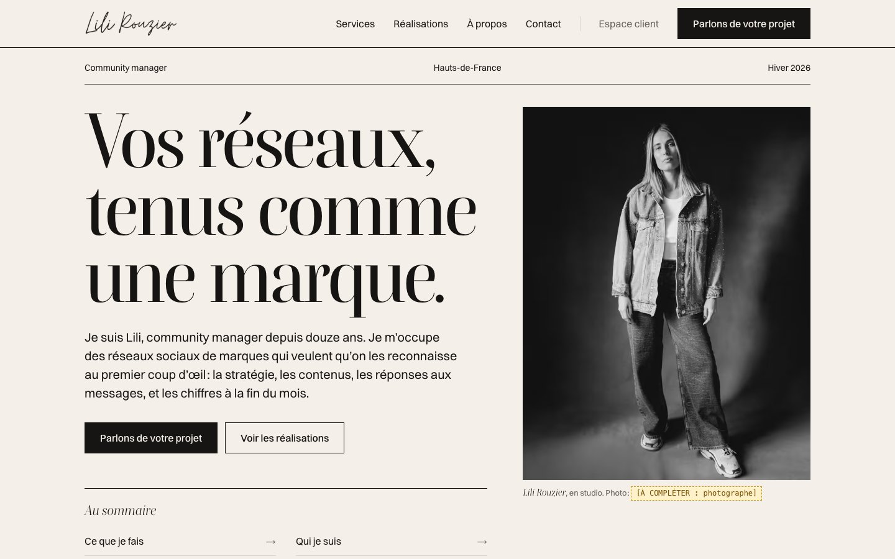
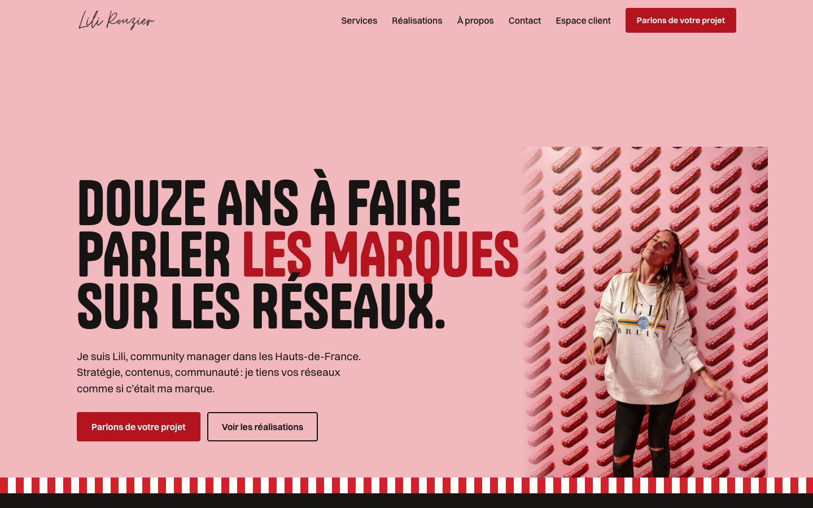
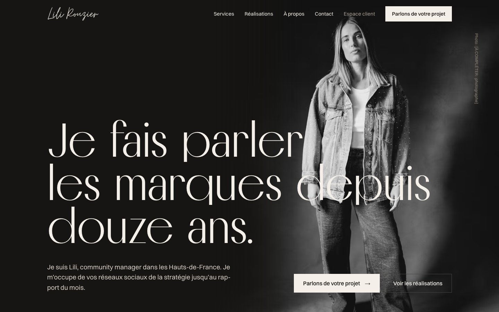

Trois pistes pour le site
Même contenu, trois directions. Les encadrés jaunes signalent ce qu’il reste à fournir. Le formulaire ne s’envoie pas encore.

A. Le magazine
Typographie à empattements, noir et blanc, beaucoup d’air, mise en page de presse.

B. La couleur
Le rose et le rouge de ses photos, une typo d’affiche, des stories et une grille de profil.

C. Le studio
Fond sombre, grandes lettres fines, bandeau des marques qui défile, animations au défilement.